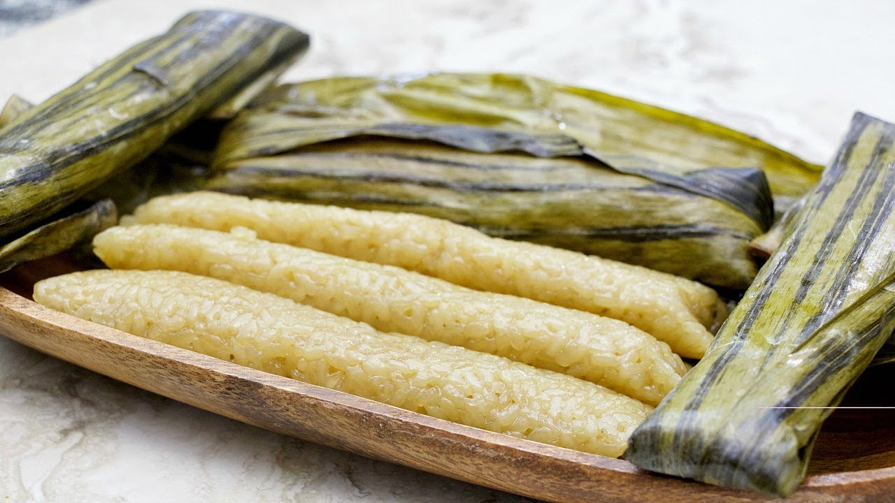

|

|
Description
Suman is a rice cake originating in the Philippines. It is made from glutinous rice cooked in coconut milk, often wrapped in banana leaves or buli or buri palm leaves for steaming. It is usually eaten sprinkled with sugar or laden with latik.
Ingredients
1 can (13.5 ounces) coconut milk
1 cup sugar
1 teaspoon salt
3 cups glutinous rice
Procedure
1. In a bowl, place rice and enough cold water to cover. Soak for about 1 hour and then drain well.
2. Meanwhile prepare banana leaves by trimming stiff ends. Cut into 10 x 10 inch squares. If leaves feel stiff, briefly pass over gas flames for about 10 to 20 seconds until pliable.
3. In a pot, combine coconut milk, sugar, and salt. Stir until sugar and salt are dissolved. Add rice and stir to disperse.
4. Over medium heat, cook rice, stirring occasionally to prevent from sticking and burning, until liquid is absorbed but rice is half-done.
5. Remove from heat and allow to slightly cool. Place about 2 to 3 heaping tablespoonfuls on a banana leaf and shape into logs, leaving about 1 inch on sides. Roll banana leaves tightly around the rice to form a log and fold both edges to seal.
6. In a pot, arrange suman with folded side down and add enough water to cover at about 1-inch. Place a layer of banana leaves over suman and a plate on top to weigh them down. Cover pot with lid.
7. Over medium heat, cook for about 45 minutes to 1 hour or until rice is fully cooked. With tongs, remove suman from water and allow to cool.
8. To serve, peel leaves and drizzle suman with coconut caramel sauce.
Price
P10 / piece
|